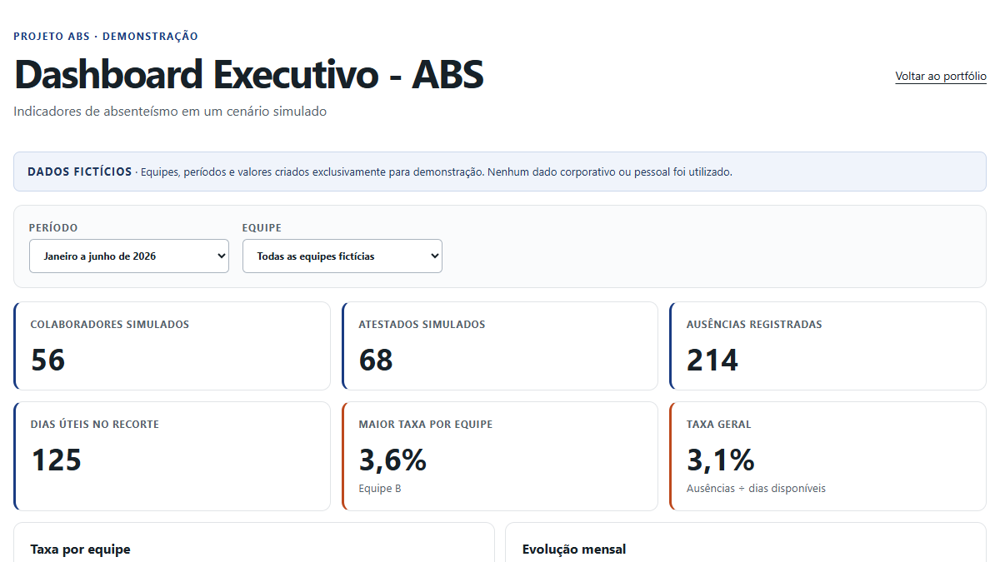
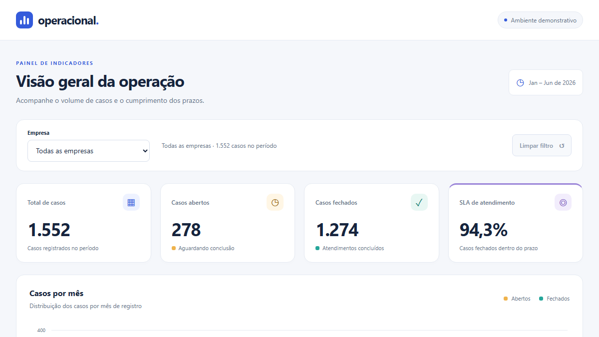

Análise de Dados e BI
- Power BI
- DAX
- Power Query
- Excel
- Indicadores operacionais
- Visualização de dados
Analista de Dados Business Intelligence Desenvolvimento de Soluções Digitais
Atuo com Análise de Dados e Business Intelligence, desenvolvendo dashboards, indicadores e soluções digitais que apoiam decisões e contribuem para a melhoria de processos.
Análise de dados e Business Intelligence para apoiar decisões e a melhoria de processos.
Atuo no desenvolvimento de indicadores e dashboards e na análise de processos operacionais. Também possuo conhecimentos em Python e desenvolvimento web, com interesse em criar soluções digitais.
Pendente de validação editorial: trajetória profissional, organizações, períodos e resultados que possam ser divulgados.
Ferramentas e áreas de conhecimento informadas, sem indicação de nível de proficiência.
Projetos de análise, automação e desenvolvimento, apresentados com as informações disponíveis para divulgação.

Dashboard desenvolvido para exibição de informações de absenteísmo para apresentação executiva.
TecnologiasHTML, CSS e JavaScript no demonstrativo
Relatório da solução Projeto ABS para visualização e acompanhamento de indicadores de absenteísmo.
Tecnologias A confirmar
Análise de demandas recorrentes e indicadores operacionais com Power BI e DAX.
Tecnologias Power BI, DAX

Dashboard demonstrativo desenvolvido para visualização de indicadores operacionais, incluindo volume de casos, status de atendimento e acompanhamento de desempenho.
Tecnologias HTML, CSS e JavaScript
Site responsivo de apresentação profissional desenvolvido com HTML, CSS e JavaScript.
Tecnologias HTML, CSS e JavaScript
Status de conclusão, tecnologias não informadas e imagens dos projetos permanecem pendentes de confirmação.
Atuação em análise de dados e desempenho operacional
Desenvolvimento e acompanhamento de indicadores, elaboração de dashboards e relatórios, análises de desempenho operacional e apoio à identificação de oportunidades de melhoria.
Pendente de validação editorial: cargos, organizações, períodos e resultados quantitativos.
Informações para validação editorial
Datas e situação de conclusão ainda não informadas.